How to get an Owl pet as a member of the Horde
An exciting world of Warcraft walk-through
"For the Horde!"
An exciting world of Warcraft walk-through
"For the Horde!"
As a hunter and a member of the Horde, you have many great pets available to you once you reach level 10: boars, scorpions, hyenas, bats. But sometimes you want a special pet - one that is a challenge to get, one that is a mark of achievement, one that can fly and has feathers. You want an owl!
click here to learn more about owls from Petopia
Unfortunately those greedy night elves have kept the young owls all to themselves, hidden away on their wispy woodland home of Teldrassil. Why should they keep these beautiful creatures locked away from us? It is time for you to do your part, and liberate an owl.
Is this for me?
Before you begin, take a look at yourself in the reflection of the pool. You should see an ugly mug looking back at you that is...
- a hunter
- an orc, tauren, troll, or blood elf
- someone with a few hours on their hands
Look closer. Are you at least level 10? Have you completed all the hunter quests that are available at level 10?
Look in that book of yours. Do you have the following skills...?
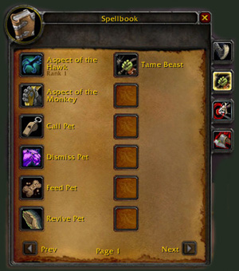
- Tame Beast
- Call Pet
- Dismiss Pet
- Feed Pet
- Revive Pet
Don't have those last two? Stop what you're doing and go get them. Heading out on this adventure without those skills is the biggest, easiest mistake you can make. (I know because I did it.) You'll be able to train a pet, but not feed them or bring them back to life, and those things are vital for having a pet. (That WoW let's you train a pet without these skills is a big error on their part IMO!)
If you're an Orc like myself, and you haven't completed the last part of the hunter quest, head over to the valley of Honor in Ogrimmar and go to the extraordinarily empty Hunter's Hall. (Who decorated this place?) Talk with Ormak Grimshot and get those important skills.
{kind=link}
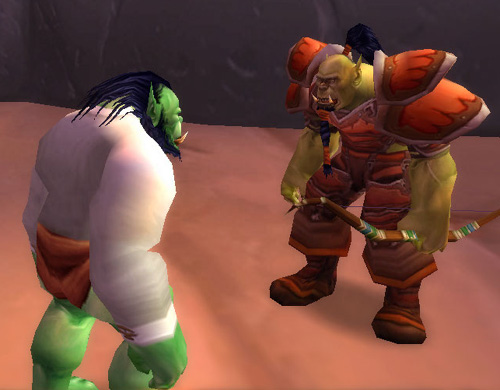
Why am I not wearing pants here? For one, it was a hot and muggy day in Durotar. But it is also a necessity for this quest. Read on...
"Victory or death!"
In this case you want the former, but will have to put up with the latter. You need to be prepared to die. Maybe even a lot. So you'll want to remove any weapons and armor of value from your person before heading out. Just stop at your neighborhood bank and store everything there. If you don't, your items will get damaged, ruined and could be a pretty costly repair. Sure you'll look a bit mad running around in your underwear, and you'll probably get eaten alive by the mosquitoes in Ashenvale, but if you're cheap and could use a tan like me, this is what you'll want to do.
It is also helpful to get some meat before you. Any kind will do - kill some boars, buy it from a vendor, it doesn't matter. You just want to make sure you have some food to feed your pets.
North we go
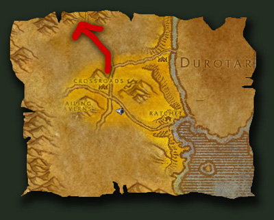
The first stop is the central town of Crossroads, located in the Barrens. Talk to the flight master quickly to get this town on your map, then start jogging north. Stay along the path and keep your Track Beasts ability on. You'll be able to see any creatures that are nearby on your mini-map. If there's a red dot, make sure to keep your distance. With no clothing to chew through, you'll make a nice snack for the lions and raptors of the region.
(See map of northern Barrens to the right)
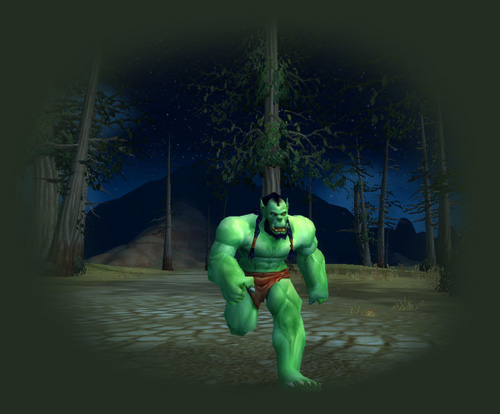
If you run at night, maybe no one will see you and mistake you for a suicidal streaker.
Are we there yet?
No, you've only just begun. Keep heading north until you through the gate to Ashenvale - the horrible land of hills and lots and lots of walking. Fortunately you'll be following the path. Unfortunately there are some nasty things right along the path - ooze monsters and water monsters - and it won't be long before one of them finds you and you're face-down in the dirt. Never fear, dying here is a good thing. In fact, if they don't find you, I recommend you introduce yourself. Be polite and maybe your death will be swift.
Far from home
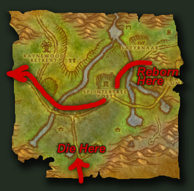
You should awaken at the graveyard to the northeast. This is actually a good spot to be, so speak with the spirit lady and get rezzed there. Don't worry about the rez sickness; you're so weak already, some minuses will hardly matter. Start heading west along the path and keep an eye out for the nearest town. You'll want to head there and speak to the flight master. If you're going to be making this long, dangerous journey by foot, you might as well make sure you never have to do it again.
(See map of eastern Ashenvale to the right)
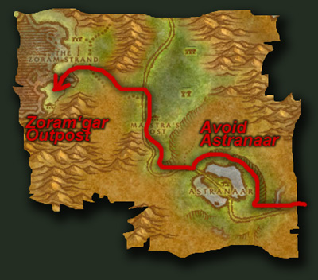 When you're done there, keep heading west along the road. Again, make sure you're tracking beasts and avoiding them. After a while, you'll come to a bridge that goes over to the island town of Astranaar. Cross that bridge and you're dead. Since that's not so much fun, head north. You should be able to circle the lake along the north with no problems. There are lots of camps here, but they're apparently empty. Connect back up with the road and keep heading west.
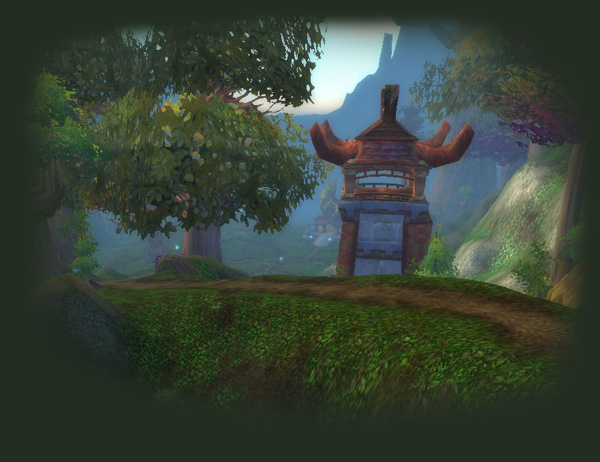
Soon the road will turn north, and it is here that you'll want to keep an eye out for a small dotted-line indicating a path west on your map. There are mostly peaceful deer this way, but a few wolves that you'll want to avoid. When you start to feel sand in your toes and smell the ocean, head south and you'll soon see the familiar faces of the Horde.
{kind=link}
"Zub Zug"
You've made it to Zoram'gar Outpost, about a third of the way to your destination. Congratulations! Take a break and have some soup with Karang, you deserve it! Don't forget to chat with Andruk to add this town to your flight map.{kind=link}
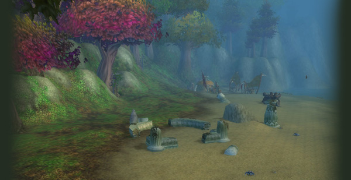
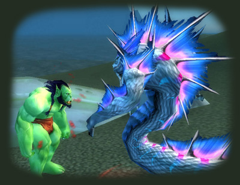 When you're done being a lazy peon, it's time for our second intentional death. Head north from town into Zoram Strand. Here you'll find some naga. They, in turn, will find an easy target. It shouldn't be long before you're dead.
Gross, I smell elves. We must be close
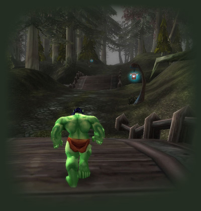 When you appear at the graveyard, talk to the spirit healer and get rezzed there. You are now in elven lands - Darkshore. Follow the road northeast and north. It's a relatively peaceful trail, and you shouldn't die, but keep your beast tracking ability on and watch your step. Things are a little dangerous down in the south, but as you make your way north you'll begin to see things that you could actually defeat! If only you had your weapons...
Here Kitty Kitty!
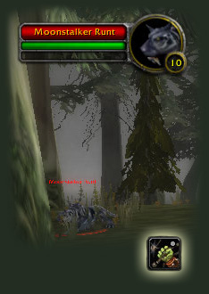 Once you begin to see some creatures that are your level, you should look for a cat that you'll be able to exploit. Find a nice black and white cat with big fangs, and start your charm! With your Tame Beast ability, he'll find you interesting enough to follow around, but after feeding him he'll really begin to like you. Poor cat, doesn't realize he's about to die for his new master and then get thrown in the gutter.
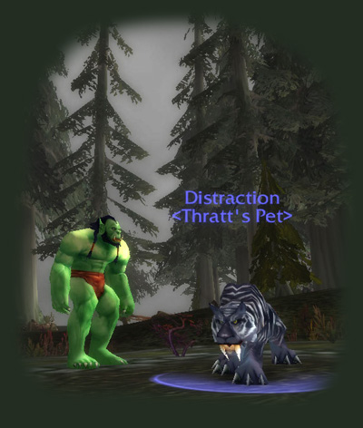 I named my new feline "distraction", but you're welcome to name him anything you'd like, so long as you don't get attached. (Some other names to consider - "meat shield", "red shirt", etc.)
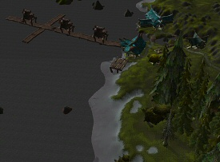 Once you've reached the outskirts of the town called Auberdine, you'll want to circle left (west) around town towards the water, and then northwest. Try to avoid any elven guards or hungry animals. Your goal is to head into the inn at the end of the docks, run up the ramp, and onto the docks.
"Break their bones!"
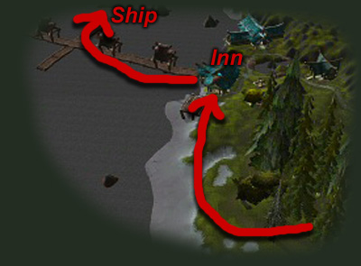 Unfortunately for you, "their" is referring to to you and your new cat. The goal is to make your way onto the dock on onto the northern-most boat (to your right). It you're lucky and don't stop running, you may just make it onto the dock without getting killed, but not much farther. The elven guards may be skinny, but they're dangerous with those weird slicey weapons. Jusy don't get cocky and think you can throw these elves a few punches along the way. If you want to save the owls, you'll have to use non-violence. (Don't worry, i won't tell anyone back at Orgrimmar that you're a hippy.)
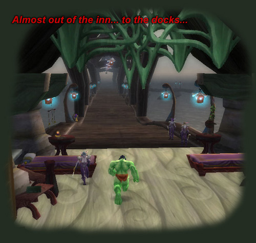
Groundhog Day
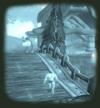 You're dead and somewhere to the north of Auberdine. You're going to have to get used to it and consider this your new base of operations. With the help of this graveyard you'll be able to conquer the elven defenses... but it's going to require dying a bunch. I died about 5 or 6 times, but I think if you're really lucky you can get that down to a minimum of 3 deaths.
Head to town as a ghost, find your body, and get as far away from your corpse as possible and as close to the end of the dock before rezzing. As soon as you're alive, start running and give a whistle for your poor cat friend to join you in charging past the guards. Don't get discouraged, eventually you'll make it onto the ship...
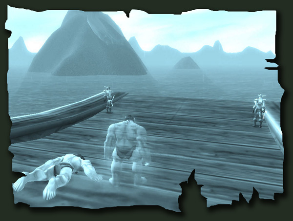
Thanks for the ride, suckers!
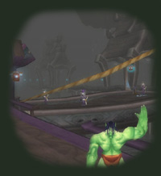 As soon as you rez on the ship, you will notice that you enter combat and are flagged for PvP but none of the guards on land or on the boat attack you. Very strange, but good news. Maybe you explained to them that you're an animal rights activist and they shared a hacky-sack with you. Maybe you explained that you just want an awesome pet that no one else in the Horde has and they high-fived you. In any event, you're apparently friends now.
Stand near the bow of the ship on the port side (that's the front left for you non-nautical folks) and ready to disembark once you near the dock at Rut'theran Village. The best method is to jump off before you reach the dock and swim along the cliff on your left. This will keep you out of range of those elves that stand around all day waiting to kill owl liberators.
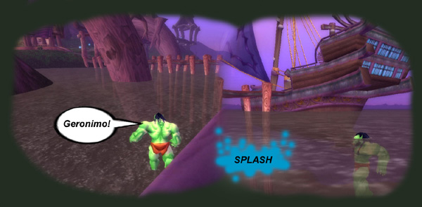
Keep close to the edge and move behind the house. You'll see a red shiny thing surrounded by a group of guards. I'm not sure what that red thing is but I presume it's some sort of mystical, teleport-o-matic, elf zapping thingy. That's your ticket to elf land! You're almost there...
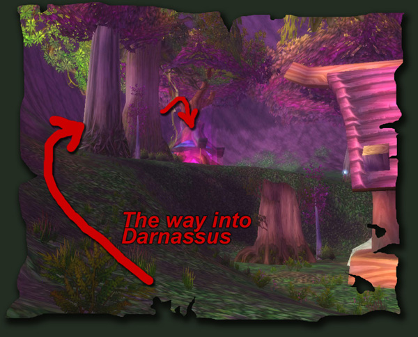
Ouch! Wait. Back here?!
Yes, once the guards kill you (and they will most certainly kill you before getting into the portal), you'll realize you're way back at the graveyard above Auberdine. Although this is a pain, it's easy enough to get yourself back - just take the ship as a ghost. Me, I like to pretend I'm on the titanic and stand at the bow of the ship.
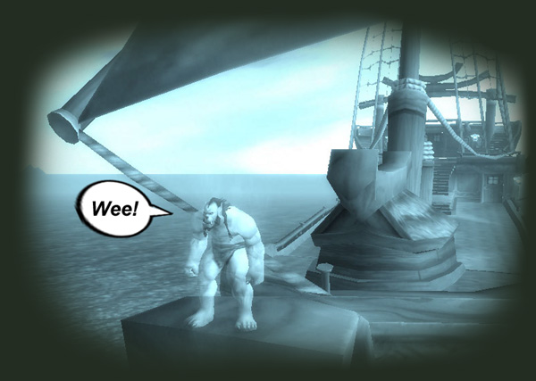
Once you return to your body, you'll probably be close enough to rez right into the portal. If not, well, you've had enough experience being a groundhog, you know what to do. Rinse, repeat.
Note: You can actually enter the portal as a ghost. If you've never been to Darnassus before as Alliance, then it could be fun to look around, but everything's all misty as a ghost, so i recommend just rezzing at your body.
Elf Land at last!
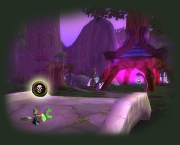 The first thing you'll notice once through the portal is that the elves have a welcoming party waiting for you. You might be thinking, "Hooray, they've brought fermented boar blood and scorpion claws!" (or wine and cheese for you blood elves)... but sadly they've just brought those damn weird slicing things and your blood. See if you can get a /cheer off before dying to announce your presence to the city residents. It'll be the last they see of you.
When you re-appear, you'll finally be at a new graveyard in Dolanaar. Rez yourself with the spirit lady, and immediately head south, away from the elves and the massive tree people. Feel free to let out a /sigh. Your adventure is nearing the end.
Hooo Whoo
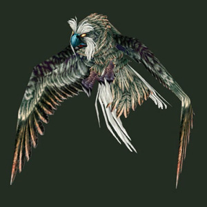 "Oh look an owl, I win! Woot!" You might see a Strigid Owl flying around, but wait a second. Don't just grab the first one you see; let's shop around. The owl's here are about level 6, but that's too low for a glorious hunter like yourself. But before we get to the owl - first thing's first. Time to get rid of that mangy cat that's been stupidly following you around.
Revive or Call your pet, click on the poor kitty, right-click his circular picture, and select Abandon. Poof! That's all. A nice subtle fade-out, almost sirene. (Personally, as an Orc I like to imagine he tried to use a nearby Timberling as a scratching post and got torn limb from limb.)
Owl At Last
Now the last leg of the journey: Start heading west. Staying on the path is not as important as before since many of these creatures you should be able to punch to death without too much trouble.
{kind=link}
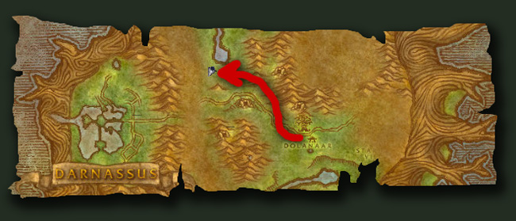
The only thing to look out for is a patrol of 3 elven women riding cats. They are usually walking back and forth on the road from Dolanaar to Darnassus, and can dispose of you without much trouble.
{kind=link}
Look for Wellspring Lake. It is there that you will find the best owls in the area: Strigid Hunters. Find yourself a level 9 hunter, and begin befriending your new treasure!
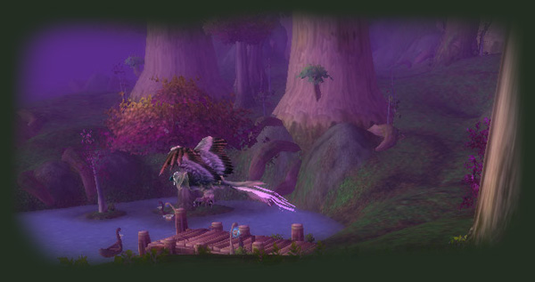
He followed me home, can I keep him?
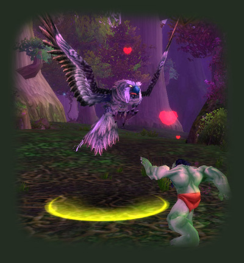 Your new feathered friend is a bit hungry and disloyal so make sure to feed him some of that meat you brought with you. In a short while he'll be your new trustworthy companion!
I would like to be able to tell you that you could save all the owls yourself, but unfortunately the rest of them will have to remain captives of the nasty night elves. Hopefully more Horde will find their way to Teldrassil to save the owls from a meaingless life of flying around doing nothing. Without servitude to the Horde, what good is life?
Farewell!
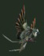 Your journey is now sucessfully over. Feel free to wander around the elven lands -- the sight of the Horde in their precious lands will probably cause some confusion -- or use your Hearthstone and head home. When you're ready, give your owl a name that fits his disposition. Mine is named Owlgrimmar because he smells a bit like our wonderous, odorous capital city.
THE END
Like this walk-through? Feel free to send Thratt a note on the Shadow Council server. And any monetary donations you send will go towards savings the owls!
Also, check out other guides, reviews and articles by the creators of this walk-through at Deathray Games.